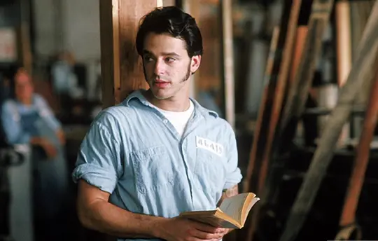

剧情简介
1947年，银行家安迪·杜佛兰（蒂姆·罗宾斯饰）被指控枪杀了妻子及其情人，安迪被判无期徒刑，这意味着他将在肖申克监狱中渡过余生。 埃利斯·“瑞德”·雷丁（摩根·弗里曼饰）1927年因谋杀罪被判无期徒刑，数次假释都未获成功。他成为了肖申克监狱中的“权威人物”，只要你付得起钱，他几乎有办法搞到任何你想要的东西：香烟、糖果、酒，甚至是大麻。每当有新囚犯来的时候，大家就赌谁会在第一个夜晚哭泣。瑞德认为弱不禁风、书生气十足的安迪一定会哭，结果安迪的沉默使瑞德输掉了两包烟，但同时也使他对安迪刮目相看。很长时间以来，安迪不和任何人接触，在大家抱怨的同时，他在院子里很悠闲地散步，就像在公园里一样。一个月后，安迪请瑞德帮他搞的第一件东西是一把小的鹤嘴锄，他的解释是他想雕刻一些小东西以消磨时光，并说他会自己想办法逃过狱方的例行检查。不久，瑞德就玩上了安迪雕刻的国际象棋。之后，安迪又搞了一幅影星丽塔·海华丝的巨幅海报贴在了牢房的墙上。
一次，安迪和另几个犯人外出劳动，他无意间听到监狱官（克兰西·布朗饰）在讲有关上税的事。安迪说他有办法可以使监狱官合法地免去这一大笔税金，做为交换，他要为十几个犯人朋友每人争取三瓶啤酒。两天后，他们坐在夕阳下的屋顶，喝着啤酒，瑞德说多年来，他第一次感受到了自由的感觉。由于安迪精通财务制度方面的知识，很快使他摆脱了狱中繁重的体力劳动和其它变态囚犯的骚扰。不久，声名远扬的安迪开始为越来越多的狱警处理税务问题，甚至孩子的升学问题也来向他请教。同时安迪也逐步成为肖恩克监狱长诺顿（鲍勃·冈顿饰）洗黑钱的重要工具。由于安迪不停地写信给州长，终于为监狱申请到了一小笔钱用于监狱图书馆的建设。监狱生活非常平淡，总要自己找一些事情来做。安迪听说瑞德原来很喜欢吹口琴，就买了一把口琴送给他。夜深人静之后，瑞德试吹了一下他的新礼物。
一个年轻犯人汤米（吉尔·贝罗斯饰）的到来打破了安迪平静的狱中生活，这个犯人以前在另一所监狱服刑时听到过安迪的案子，他知道谁是真凶。但当安迪向监狱长提出要求重新审理此案时，却遭到了拒绝，并受到了单独禁闭两个月的严重惩罚。而为了防止安迪获释，监狱长设计害死了这个年轻犯人。面对残酷的现实，安迪变得很消沉。有一天，他对瑞德说：“如果有一天，你可以获得假释，一定要到某个地方替我完成一个心愿。那是我第一次和妻子约会的地方，把那里一棵大橡树下的一个盒子挖出来。到时你就知道是什么了。”当天夜里，风雨交加，雷声大作，已得到灵魂救赎的安迪越狱成功。 原来二十年来，安迪每天都在用那把小鹤嘴锄挖洞，然后用海报将洞口遮住。安迪出狱后，领走了部分监狱长存的黑钱，并告发了监狱长贪污受贿的真相。监狱长在自己存小账本的保险柜里见到的是安迪留下的一本圣经，第一页写到“得救之道，就在其中”，另外圣经里边还有个挖空的部分，用来藏匿挖洞的鹤嘴锄。经过40年的监狱生涯，瑞德终于获得假释，他在与安迪约定的橡树下找到了一个铁盒，里面有一些现金和一封安迪的亲笔信，两个老朋友终于在蔚蓝色的太平洋海滨重逢了。
 汤米·威廉姆斯